光復南路東側 57、45、33、17、13 巷，西側 58、46、32、22、6 巷。兩版實機採用相同座標、朝向及視角，參照全景的離地高度估為 2.45 公尺。遊戲模型呈現街景拍攝時可見的外觀，未辨識的小字招牌保留色塊。
方位 155° 開啟原位置的 Google 街景 原尺寸對照
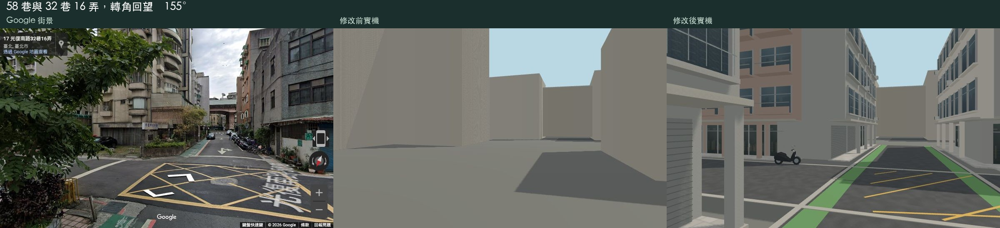
方位 329° 開啟原位置的 Google 街景 原尺寸對照
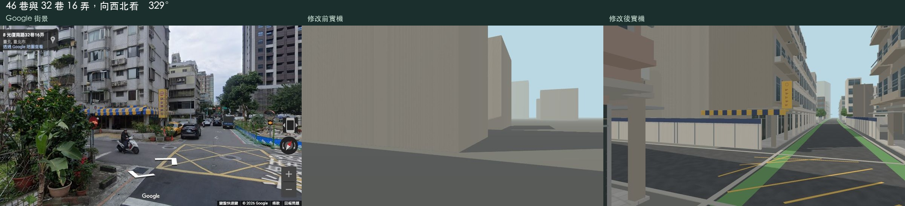
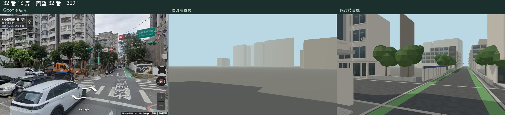
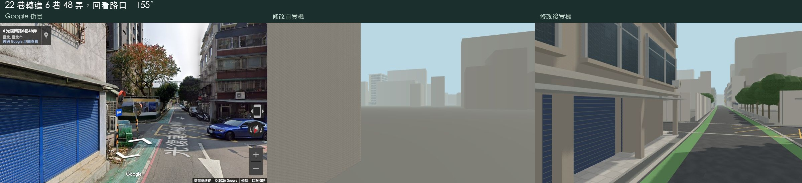
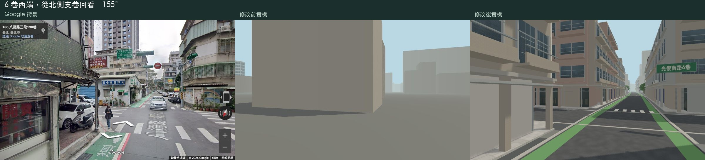
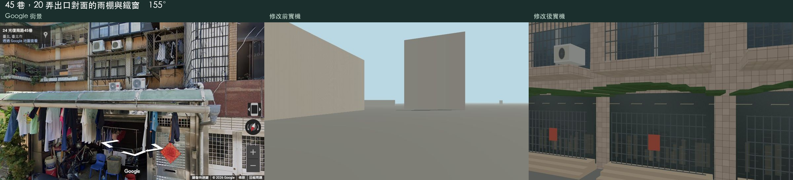
方位 27° 開啟原位置的 Google 街景 原尺寸對照
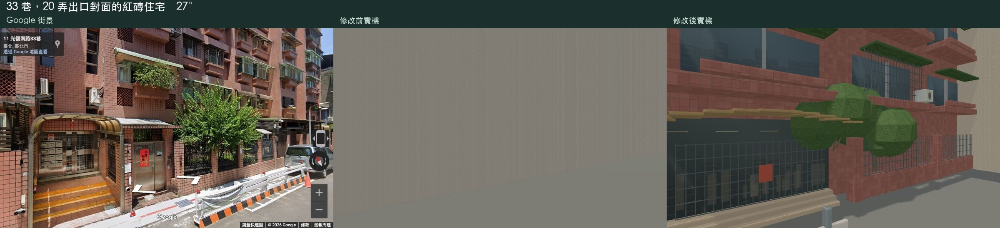
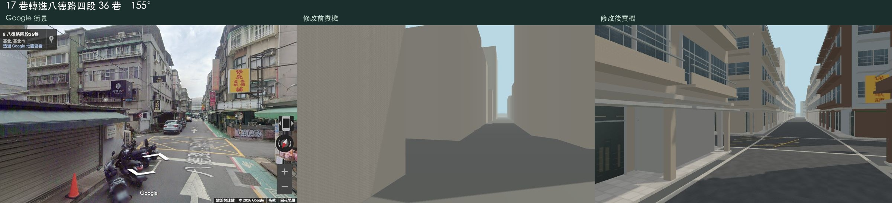
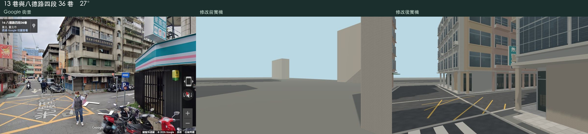
方位 160° 開啟原位置的 Google 街景 原尺寸對照
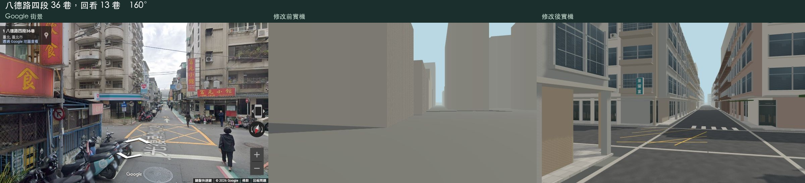
方位 183° 開啟原位置的 Google 街景 原尺寸對照
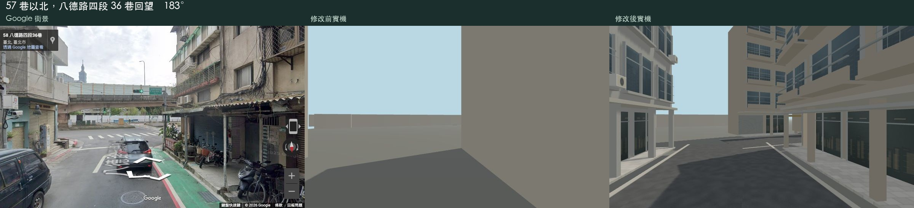
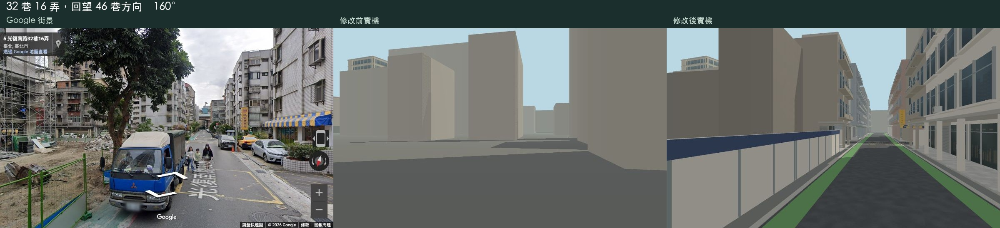
方位 345° 開啟原位置的 Google 街景 原尺寸對照
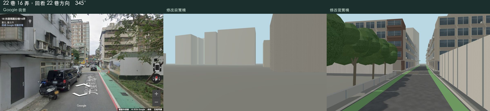